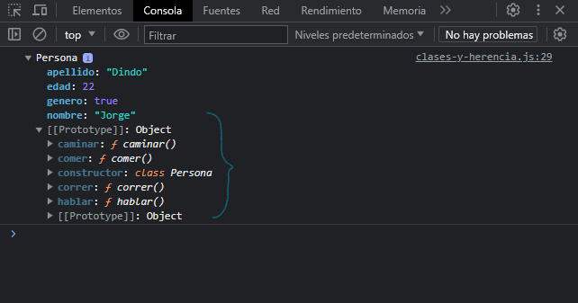
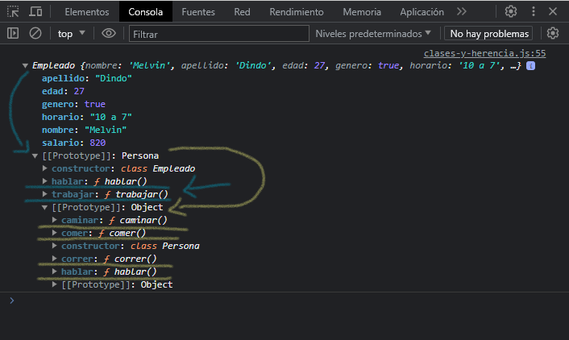

#clases
Las clases de JavaScript, introducidas en ECMAScript 2015, son una mejora sintáctica sobre la herencia basada en prototipos de JavaScript. La sintaxis de las clases no introduce un nuevo modelo de herencia orientado a objetos en JavaScript. Las clases de JavaScript proveen una sintaxis mucho mas clara y simple para crear objetos y lidiar con la herencia.
Las clases son "funciones especiales", como las "funciones expresadas" y "funciones declaradas".
Declaración de clases
Una manera de definir una clase es mediante una "declaración de clase". Para declarar una clase, se utiliza la palabra reservada class y un nombre para la clase.
class Persona {
}
Para inicializar un objeto creado con una clase, se utiliza el método constructor(), es un método especial para crear e inicializar un objeto. Solo puede haber un método especial con el nombre "constructor" en una clase. Un constructor() puede usar la palabra reservada super para llamar al constructor de una superclase.
class Persona {
constructor(nombre, apellido, edad, genero) {
this.nombre = nombre
this.apellido = apellido
this.edad = edad
this.genero = genero
}
}
Métodos prototipo
class Persona {
constructor(nombre, apellido, edad, genero) {
this.nombre = nombre
this.apellido = apellido
this.edad = edad
this.genero = genero
}
caminar() {
console.log(`${this.nombre} - caminando...`)
}
correr() {
console.log(`${this.nombre} - corriendo...`)
}
hablar() {
console.log(`${this.nombre} - hablando...`)
}
comer() {
console.log(`${this.nombre} - comiendo...`)
}
}
Las clases nos permiten que los métodos se queden en el prototipo de la clase al momento de hacer instancia de ella.
const jorge = new Persona("Jorge", "Dindo", 22, true)
jorge.caminar()
jorge.correr()
jorge.hablar()
jorge.comer()

#herencia
Cuando usamos clases y queremos heredar de ella, se utiliza la palabra reservada extends, para heredar sus propiedades y métodos.
class Empleado extends Persona {
}
Para poder llamar métodos y propiedades del objeto padre del cual estamos heredando, se utiliza la palabra reservada super.
class Empleado extends Persona {
constructor(nombre, apellido, edad, genero, horario, salario) {
super(nombre, apellido, edad, genero)
this.horario = horario
this.salario = salario
}
}
Al constructor pasamos los parámetros de la clase padre, y los parámetros propios de la clase que hereda, con super pasamos los parámetros de la clase padre para llamar a su constructor.
Asi mismo esta puede tener sus propios métodos y sobre escribir las sentencias dentro de una función heredada:
class Empleado extends Persona {
constructor(nombre, apellido, edad, genero, horario, salario) {
super(nombre, apellido, edad, genero)
this.horario = horario
this.salario = salario
}
trabajar() {
console.log(`${this.nombre} - trabajando...`)
}
hablar() {
console.log(`${this.nombre} - hablando en el trabajo...`)
}
}
Creamos una instancia de "Empleado" y mostremos por consola:
const melvin = new Empleado("Melvin", "Dindo", 27, true, "10 a 7", 820.00)
console.log(melvin)

Analicemos, en la imagen tenemos a "Empleado" que es la clase que estamos heredando, con la flecha de color azul indica que su prototipo es "Persona" ya que estamos heredando de ella, con color azul subrayado podemos ver solo los métodos que pertenecen a "Empleado".
Continuando, en la imagen también tenemos a "Persona" que es la clase padre, con la flecha de color amarillo indica que su prototipo es un Object ya que esta es la clase padre de la cual heredan las demás clases, con color amarillo subrayado podemos ver solo los metodos que pertenecen a "Persona".
En conclusion, al heredar con clases, lo que hace JavaScript es un arreglo sintáctico que nos permite que la herencia sea mas ordenada y menos compleja, como podemos ver en la imagen, al heredar de una clase, los métodos cuelgan del prototipo del objeto al que pertenecen, como es el caso de "Empleado" que su prototipo es "Persona" y este a la vez tiene su prototipo nativo Object con sus propios métodos y propiedades al igual que "Empleado".